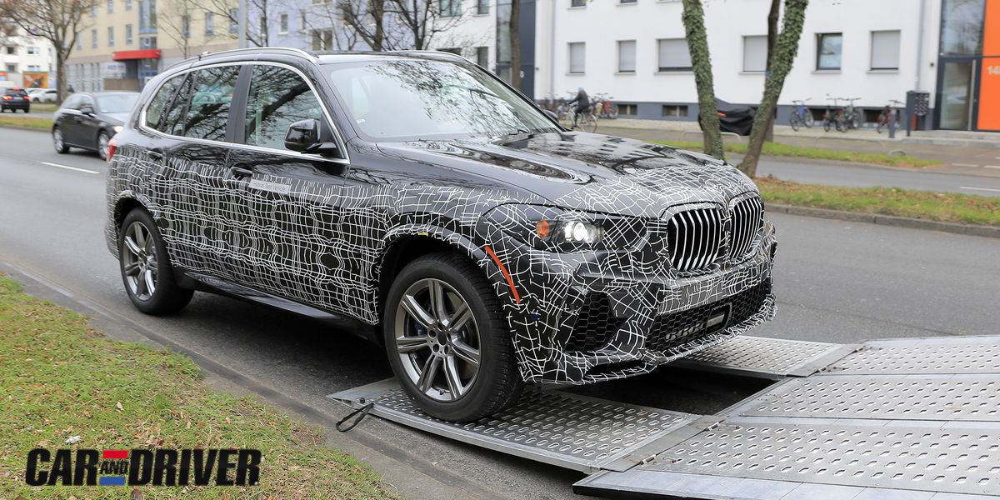

'BMW X6',La
gama BMW X6 M demuestra su dominio extrovertido con un dinamismo de conducción único, un expresivo diseño M y una agilidad inigualable. Descubre tres imponentes Sports Activity Coupés (SAC): el modelo BMW X6 M50i convence por su combinación
única de prestaciones, comodidad y eficiencia. El BMW X6 M Competition con sistema M xDrive impresiona con su interior exclusivo y un dinamismo de conducción marcado por sus genes de competición. Una experiencia de conducción cargada de adrenalina
aún mejor en el potente y llamativo BMW X6 M Competition con sistema M xDrive.
BMW 2021 X5
El BMW X5 es un SUV premium del segmento E, fabricado por BMW, de tamaño grande que se acerca a los 5 metros de longitud, con un amplio habitáculo y un enorme maletero de 645 litros con sus 5 plazas en uso. El BMW X5 destaca por su gama de motores de
última tecnología, un diseño interior moderno, digitalizado y de alta calidad, por sus dotes 4x4 más allá del asfalto y por la posibilidad de disfrutar de hasta 7 plazas.

BMW 2021 X1
Supera cualquier desafío: el BMW X1 ha llegado para marcar la pauta. Su fuerza se pone de manifiesto en su diseño atlético. Ya a primera vista es un auténtico modelo X: su exterior se caracteriza por los cortos voladizos característicos del SAV (Sports
Activity Vehicle) y una gran distancia entre ejes. Con un dinamismo y una agilidad convincentes, deja claras sus ambiciones. Y gracias a su gran versatilidad y flexibilidad, en combinación con tecnologías innovadoras, garantiza la máxima comodidad
en cada metro recorrido.